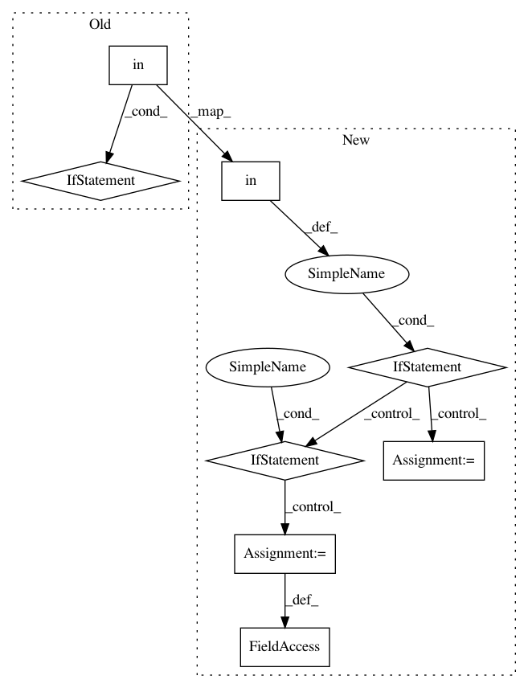

5dd65b017cf87fa4d88c5123d4b3385d4591a2a0,QUANTAXIS/QAMarket/QATTSBroker.py,QA_TTSBroker,data_to_df,#QA_TTSBroker#Any#,111
Before Change
return data_bytes.rstrip(b"\x00").decode(self._encoding)
def data_to_df(self, result):
if "data" in result:
data = result["data"]
return pd.DataFrame(data=data)
//------ functions
def ping(self):
return self.call("ping", {})
After Change
return data_bytes.rstrip(b"\x00").decode(self._encoding)
def data_to_df(self, result):
if "data" in result:
data = result["data"]
df = pd.DataFrame(data=data)
df.rename(columns=lambda x: cn_en_compare[x] if x in cn_en_compare else x, inplace=True)
if hasattr(df, "towards"):
df.towards = df.towards.apply(lambda x: trade_towards_cn_en[x] if x in trade_towards_cn_en else x)
if hasattr(df, "status"):
df.status = df.status.apply(lambda x: order_status_cn_en[x] if x in order_status_cn_en else x)
if hasattr(df, "order_time"):
df.order_time = df.order_time.apply(
lambda x: "{} {}".format(
datetime.date.today().strftime("%Y-%m-%d"),
datetime.datetime.strptime(x, "%H%M%S").strftime("%H:%M:%S")))
if hasattr(df, "trade_time"):
df.trade_time = df.trade_time.apply(
lambda x: "{} {}".format(
datetime.date.today().strftime("%Y-%m-%d"),
datetime.datetime.strptime(x, "%H%M%S").strftime("%H:%M:%S")))
return df
else:
return pd.DataFrame()
//------ functions
def ping(self):
return self.call("ping", {})
In pattern: SUPERPATTERN
Frequency: 4
Non-data size: 8
Instances
Project Name: QUANTAXIS/QUANTAXIS
Commit Name: 5dd65b017cf87fa4d88c5123d4b3385d4591a2a0
Time: 2019-03-13
Author: namedhard@zeroun.net
File Name: QUANTAXIS/QAMarket/QATTSBroker.py
Class Name: QA_TTSBroker
Method Name: data_to_df
Project Name: NervanaSystems/coach
Commit Name: 524f8436a298a243bd81b8860f85ab6145b4b26f
Time: 2018-11-14
Author: scott.leishman@gmail.com
File Name: rl_coach/environments/doom_environment.py
Class Name: DoomEnvironment
Method Name: __init__
Project Name: analysiscenter/batchflow
Commit Name: 89f41f9280daceb58895f6a958c493f126db03bc
Time: 2019-12-05
Author: Tsimfer.SA@gazprom-neft.ru
File Name: batchflow/models/eager_torch/layers/resize.py
Class Name: Combine
Method Name: __init__
Project Name: Microsoft/nni
Commit Name: 41e587038a32db002178329a64224ea6a5b2a5f9
Time: 2019-09-15
Author: 40699903+liuzhe-lz@users.noreply.github.com
File Name: src/sdk/pynni/nni/msg_dispatcher.py
Class Name: MsgDispatcher
Method Name: _handle_final_metric_data